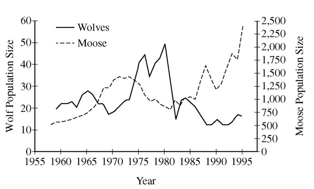

The graph above represents the number of individuals in a population of wolves and in a population of moose observed in the same isolated geographic area over a 40-year period, from 1955 through 1995. Which of the following statements about the two populations is best supported by the information presented in the graph?